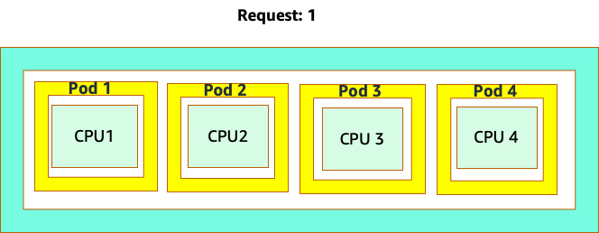
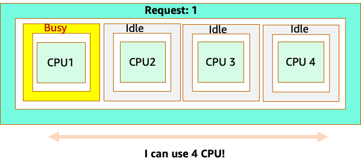
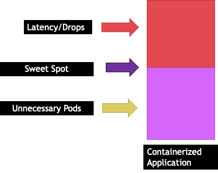
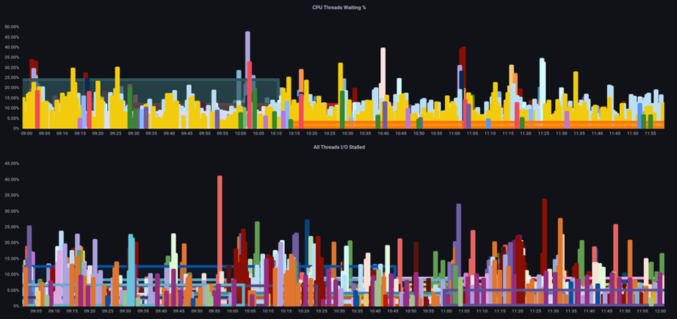
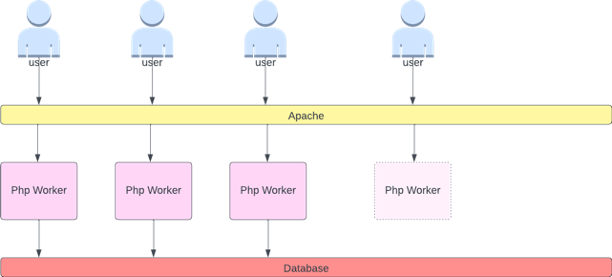
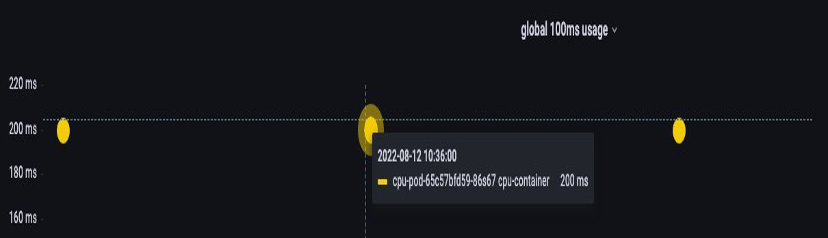

节点和工作负载效率¶
提高工作负载和节点的效率可以降低复杂性/成本,同时提高性能和扩展性。在规划这种效率时需要考虑许多因素,最简单的方法是权衡取舍,而不是为每个功能设置一个最佳实践。让我们在以下部分深入探讨这些权衡取舍。
节点选择¶
使用略大一些的节点尺寸(4-12xlarge)可以增加我们运行 pod 的可用空间,因为它降低了节点用于"开销"(如 DaemonSets 和 Reserves 用于系统组件)的百分比。在下图中,我们可以看到 2xlarge 和 8xlarge 系统之间的可用空间差异,只有适度数量的 DaemonSets。
Note
由于 k8s 通常是横向扩展,对于大多数应用程序来说,采用 NUMA 大小的节点不会带来性能影响,因此建议使用下面提到的节点尺寸范围。

较大的节点尺寸可以让我们每个节点拥有更高比例的可用空间。但是,这种模型可能会被极端化,即将节点打包得太满,从而导致错误或饱和节点。监控节点饱和度是成功使用较大节点尺寸的关键。
节点选择很少是一刀切的。通常最好将具有不同 churn 率的工作负载分成不同的节点组。具有高 churn 率的小批量工作负载最适合 4xlarge 系列实例,而像 Kafka 这样的大规模应用程序(需要 8 个 vCPU,churn 率低)则更适合 12xlarge 系列。

Tip
考虑使用非常大的节点尺寸的另一个因素是,CGROUPS 不会隐藏容器化应用程序看到的总 vCPU 数。动态运行时可能会无意中生成过多的 OS 线程,从而产生难以排查的延迟。对于这些应用程序,建议使用 CPU 亲和性。如需深入探讨此主题,请观看以下视频 https://www.youtube.com/watch?v=NqtfDy_KAqg
节点装箱¶
Kubernetes 与 Linux 规则¶
在 Kubernetes 上处理工作负载时,我们需要注意两组规则。Kubernetes 调度器使用 request 值来调度 pod 到节点上,然后 pod 被调度后,就进入了 Linux 的领域,而不再是 Kubernetes 的范畴。
Kubernetes 调度器完成后,一组新的规则就开始生效了,那就是 Linux 的 Completely Fair Scheduler (CFS)。关键的认识是,Linux CFS 没有"核心"的概念。我们将讨论为什么从"核心"的角度思考会导致优化工作负载扩展性的重大问题。
从"核心"的角度思考¶
困惑开始于 Kubernetes 调度器确实有"核心"的概念。从 Kubernetes 调度器的角度来看,如果我们看到一个节点有 4 个 NGINX pod,每个 pod 都设置了一个核心的 request,那么该节点看起来会是这样的。

但是,让我们做一个思维实验,看看从 Linux CFS 的角度来看会是什么样子。使用 Linux CFS 系统时最重要的是要记住:繁忙的容器(CGROUPS)是唯一会计入共享系统的容器。在这种情况下,只有第一个容器是繁忙的,所以它被允许使用节点上的所有 4 个核心。

为什么这很重要?假设我们在开发集群中运行性能测试,NGINX 应用程序是该节点上唯一繁忙的容器。当我们将应用程序移到生产环境时,会发生以下情况:NGINX 应用程序需要 4 个 vCPU 的资源,但由于节点上的其他 pod 都很繁忙,我们的应用程序性能会受到限制。

这种情况会导致我们不必要地添加更多容器,因为我们没有让我们的应用程序扩展到它们的"最佳点"。让我们更详细地探讨一下这个"最佳点"的重要概念。
应用程序合适大小¶
每个应用程序都有一个特定的点,它无法再接受更多流量。超过这个点会增加处理时间,甚至在大大超过这个点时会丢弃流量。这被称为应用程序的饱和点。为了避免扩展问题,我们应该在应用程序达到饱和点之前尝试扩展它。让我们称这个点为最佳点。

我们需要测试每个应用程序,以了解它的最佳点。这里没有统一的指导,因为每个应用程序都不同。在这个测试过程中,我们试图了解最能显示应用程序饱和点的指标。通常使用利用率指标来表示应用程序已饱和,但这可能很快就会导致扩展问题(我们将在后续部分详细探讨这个主题)。一旦我们有了这个"最佳点",我们就可以用它来有效地扩展我们的工作负载。
相反,如果我们在最佳点之前大幅扩展并创建不必要的 pod 会发生什么?让我们在下一节探讨一下。
Pod 泛滥¶
为了看看创建不必要的 pod 会如何迅速失控,让我们看看左边的第一个例子。这个容器的正确垂直扩展占用了大约两个 vCPU 的利用率,可以处理每秒 100 个请求。但是,如果我们将 request 值设置为半个核心,我们现在需要 4 个 pod 来取代原来的 1 个 pod。更糟糕的是,如果我们的 HPA 设置为默认的 50% CPU,这些 pod 会以一半空的状态进行扩展,创造一个 8:1 的比例。

扩展这个问题,我们可以很快看到它会失控。一个十个 pod 的部署,如果最佳点设置不正确,可能会迅速膨胀到 80 个 pod,以及运行它们所需的额外基础设施。

现在我们了解了不让应用程序在其最佳点运行的影响,让我们回到节点层面,问一下 Kubernetes 调度器和 Linux CFS 之间的差异为什么如此重要?
当使用 HPA 进行扩缩时,我们可能会有大量空间来分配更多 pod。这将是一个错误的决定,因为左边描述的节点已经达到 100% CPU 利用率。在一个不太现实但理论上可能的情况下,我们可能会有完全相反的情况,即我们的节点已经满了,但 CPU 利用率为零。

设置 Requests¶
将 request 设置为该应用程序的"最佳点"值很诱人,但这会造成效率低下,如下图所示。这里我们将 request 值设置为 2 vCPU,但这些 pod 的平均利用率大部分时间只有 1 CPU。这种设置会导致我们浪费 50% 的 CPU 周期,这是不可接受的。

这带我们进入了这个问题的复杂答案。容器利用率不能独立考虑;必须考虑节点上运行的其他应用程序。在下面的示例中,突发性质的容器与两个 CPU 利用率较低但可能受内存限制的容器混合在一起。这样,我们允许容器达到它们的最佳点,而不会过度利用节点。

从所有这些中吸取的重要概念是,使用 Kubernetes 调度器的"核心"概念来理解 Linux 容器性能可能会导致决策失误,因为它们并不相关。
Tip
Linux CFS 有它的长处。这对 I/O 密集型工作负载特别有用。但是,如果您的应用程序使用完整的核心而没有 sidecar,并且没有 I/O 需求,CPU 亲和性可以大大减少这个过程的复杂性,并且在这些前提下是值得推荐的。
利用率 vs. 饱和度¶
应用程序扩展中的一个常见错误是仅使用 CPU 利用率作为扩展指标。在复杂的应用程序中,这几乎总是一个很差的指标,无法反映应用程序是否真正饱和。在左侧的示例中,我们看到所有请求实际上都命中了 web 服务器,因此 CPU 利用率很好地跟踪了饱和度。
在现实世界的应用程序中,很可能有一些请求会被数据库层或身份验证层服务。在这种更常见的情况下,请注意 CPU 并没有跟踪饱和度,因为请求是由其他实体提供服务的。在这种情况下,CPU 是一个非常糟糕的饱和度指标。

在应用程序性能中使用错误的指标是 Kubernetes 中不必要和不可预测扩展的首要原因。在为您使用的应用程序类型选择正确的饱和度指标时,必须格外小心。值得注意的是,没有一种"一刀切"的建议可以给出。根据所使用的语言和应用程序类型的不同,存在多种饱和度指标。
我们可能会认为这个问题只存在于 CPU 利用率,但其他常见的指标,如每秒请求数,也会陷入上述完全相同的问题。请注意,请求也可能转到 DB 层、身份验证层,而不是直接由我们的 web 服务器提供服务,因此它不是 web 服务器本身饱和度的良好指标。

不幸的是,在选择正确的饱和度指标方面没有简单的答案。以下是一些需要考虑的指导方针:
- 了解您的语言运行时 - 具有多个 OS 线程的语言将与单线程应用程序产生不同的反应,从而影响节点。
- 了解正确的垂直扩展 - 在扩展新 pod 之前,您希望应用程序的垂直扩展有多大缓冲?
- 什么指标真正反映了应用程序的饱和度 - Kafka Producer 的饱和度指标与复杂 web 应用程序的指标大不相同。
- 节点上的其他应用程序如何相互影响 - 应用程序性能不是在真空中完成的,节点上的其他工作负载有很大影响。
为了结束这一部分,很容易将上述内容视为过于复杂和不必要。通常情况下,我们正在经历一个问题,但由于我们正在查看错误的指标,我们并不知道问题的真正性质。在下一节中,我们将看看这种情况可能会发生。
节点饱和¶
现在我们已经探讨了应用程序饱和,让我们从节点的角度来看这个概念。让我们看两个 100% 利用的 CPU,看看利用率和饱和度之间的区别。
左侧的 vCPU 是 100% 利用的,但没有其他任务等待在这个 vCPU 上运行,所以从理论上讲,这是相当高效的。与此同时,我们有 20 个单线程应用程序等待被第二个示例中的 vCPU 处理。所有 20 个应用程序现在都会在等待轮到它们被 vCPU 处理时经历某种延迟。换句话说,右侧的 vCPU 是饱和的。
如果我们只看利用率,我们不仅无法看到这个问题,而且可能会将这种延迟归咎于网络等无关因素,从而走上错误的道路。

在增加节点上同时运行的 pod 总数时,查看饱和度指标而不仅仅是利用率指标非常重要,因为我们很容易错过节点已经过度饱和的事实。为此,我们可以使用压力压力信息指标,如下图所示。
PromQL - 阻塞 I/O

Note
关于压力压力指标的更多信息,请参见 https://facebookmicrosites.github.io/psi/docs/overview
使用这些指标,我们可以知道线程是否在等待 CPU,甚至如果箱子上的每个线程都在等待资源(如内存或 I/O)而被阻塞。例如,我们可以看到在 1 分钟内,箱子上的每个线程有 45% 的时间都在等待 I/O。了解正在发生的情况可以帮助我们收回大量的 vCPU 时间,从而提高扩展效率。
HPA V2¶
建议使用 autoscaling/v2 版本的 HPA API。较旧版本的 HPA API 可能会在某些边缘情况下陷入停滞。它还限制了每个扩展步骤 pod 只能翻倍,这对需要快速扩展的小型部署造成了问题。
Autoscaling/v2 允许我们更灵活地包括多个标准来进行扩展,并允许我们在使用自定义和外部指标(非 K8s 指标)时拥有很大的灵活性。
例如,我们可以根据三个值中的最高值进行扩展(见下文)。如果所有 pod 的平均利用率超过 50%,如果入口的自定义指标每秒数据包超过 1,000 个,或者入口对象每秒超过 10,000 个请求,我们就会进行扩展。
Note
这只是为了展示自动缩放 API 的灵活性,我们建议不要使用过于复杂的规则,因为它们在生产环境中可能很难排查。
apiVersion: autoscaling/v2
kind: HorizontalPodAutoscaler
metadata:
name: php-apache
spec:
scaleTargetRef:
apiVersion: apps/v1
kind: Deployment
name: php-apache
minReplicas: 1
maxReplicas: 10
metrics:
- type: Resource
resource:
name: cpu
target:
type: Utilization
averageUtilization: 50
- type: Pods
pods:
metric:
name: packets-per-second
target:
type: AverageValue
averageValue: 1k
- type: Object
object:
metric:
name: requests-per-second
describedObject:
apiVersion: networking.k8s.io/v1
kind: Ingress
name: main-route
target:
type: Value
value: 10k
然而,我们了解到对于复杂的 web 应用程序使用这种指标是危险的。在这种情况下,我们最好使用准确反映应用程序饱和度而不是利用率的自定义或外部指标。HPAv2 允许我们根据任何指标进行扩展,但我们仍然需要找到并将该指标导出到 Kubernetes 以供使用。
例如,我们可以查看 Apache 中的活动线程队列计数。这通常会创造一个"更平滑"的扩展配置文件(稍后会解释这个术语)。如果一个线程是活动的,不管该线程是在等待数据库层还是在本地提供服务,如果应用程序的所有线程都在使用,这都是应用程序饱和的很好指标。
我们可以使用这个线程耗尽作为创建新 pod 的信号,并拥有一个完全可用的线程池。这也让我们能够控制在高流量期间我们想要的缓冲区大小。例如,如果我们有一个总共 10 个线程池,在 4 个线程使用时扩展与在 8 个线程使用时扩展会对我们在扩展时可用的缓冲区产生重大影响。设置为 4 对于需要在重负载下快速扩展的应用程序来说是合理的,而设置为 8 则更适合于请求缓慢增加而不是急剧增加的情况,因为我们有足够的时间进行扩展。

我们所说的"平滑"扩展是什么意思?注意下图,我们使用 CPU 作为指标。这个部署的 pod 在短时间内从 50 个 pod 急剧增加到 250 个 pod,然后又立即缩减。这种高效率的扩展是集群上 churn 的主要原因。

注意当我们改为反映应用程序正确最佳点(图表中间部分)的指标后,我们能够平稳地进行扩展。我们的扩展现在是高效的,我们的 pod 被允许在我们通过调整 request 设置提供的缓冲区内完全扩展。实际数据显示,这是 Kubernetes 集群可扩展性的首要因素。

关键的认识是,CPU 利用率只是应用程序和节点性能的一个维度。将 CPU 利用率作为我们节点和应用程序健康的唯一指标会导致扩展、性能和成本方面的问题,这些都是紧密相关的概念。应用程序和节点的性能越好,需要扩展的就越少,从而降低成本。
找到并使用正确的扩展指标来扩展您的特定应用程序,还可以让您监控和报警该应用程序的真正瓶颈。如果跳过这个关键步骤,性能问题的报告将很难,如果不是不可能理解的。
设置 CPU 限制¶
为了总结这一节对被误解的主题的探讨,我们将讨论 CPU 限制。简而言之,限制是与容器相关的元数据,它有一个每 100 毫秒重置一次的计数器。这有助于 Linux 跟踪特定容器在 100 毫秒内使用了多少 CPU 资源。

设置限制的一个常见错误是假设应用程序是单线程的,只在其"分配"的 vCPU 上运行。在上一节中,我们了解到 CFS 不分配核心,实际上运行大型线程池的容器会在节点上所有可用的 vCPU 上进行调度。
如果 64 个 OS 线程跨 64 个可用的内核(从 Linux 节点的角度来看)运行,我们在 100 毫秒内累计的总 CPU 时间使用量将会很大。由于这可能只发生在垃圾回收过程中,很容易错过这种情况。这就是为什么有必要使用指标来确保我们在尝试设置限制之前有正确的长期使用情况。
幸运的是,我们有一种方法可以准确地看到应用程序的所有线程使用了多少 vCPU。我们将使用指标 container_cpu_usage_seconds_total 来实现这一点。
由于节流逻辑每 100 毫秒发生一次,而这个指标是每秒指标,我们将使用 PromQL 来匹配这个 100 毫秒的周期。如果您想深入研究这个 PromQL 语句的工作原理,请参见以下博客。
PromQL 查询:
topk(3, max by (pod, container)(rate(container_cpu_usage_seconds_total{image!="", instance="$instance"}[$__rate_interval]))) / 10

一旦我们感觉有了正确的值,我们就可以将限制放到生产环境中。然后,我们需要查看应用程序是否由于某些意外原因而受到节流。我们可以通过查看 container_cpu_throttled_seconds_total 来做到这一点。
topk(3, max by (pod, container)(rate(container_cpu_cfs_throttled_seconds_total{image!=``""``, instance=``"$instance"``}[$__rate_interval]))) / 10

内存¶
内存分配是另一个很容易将 Kubernetes 调度行为与 Linux CGroup 行为混淆的例子。这是一个更微妙的话题,因为 CGroup v2 在处理 Linux 中的内存方面发生了重大变化,Kubernetes 也已经改变了它的语法来反映这一变化;请阅读这篇博客以获得更多细节。
与 CPU requests 不同,内存 requests 在调度过程完成后就不会被使用。这是因为我们无法像压缩 CPU 那样压缩内存在 CGroup v1 中。这就只剩下内存限制,它被设计为内存泄漏的安全网,通过完全终止 pod 来实现。这是一种非黑即白的做法,但现在我们有了新的方法来解决这个问题。
首先,重要的是要理解为容器设置正确的内存量并不像看起来那么简单。Linux 的文件系统会使用内存作为缓存来提高性能。这个缓存会随时间增长,很难知道有多少内存只是对缓存有益但可以在不显著影响应用程序性能的情况下回收。这常常会导致对内存使用的误解。
能够"压缩"内存是 CGroup v2 的主要驱动力之一。关于为什么需要 CGroup V2 的更多历史,请参见 Chris Down 在 LISA21 上的演讲,他在那里解释了无法正确设置最小内存是他创建 CGroup v2 和压力压力指标的原因之一。
幸运的是,Kubernetes 现在有了 memory.min 和 memory.high 的概念,作为 requests.memory 的一部分。这使我们可以更积极地释放这些缓存内存供其他容器使用。一旦容器达到内存高限制,内核就可以积极回收该容器的内存,直到达到设置的 memory.min 值。这样给了我们在节点遇到内存压力时更多的灵活性。
关键问题是,应该将 memory.min 设置为什么值?这就是内存压力压力指标发挥作用的地方。我们可以使用这些指标来检测容器级别的内存"抖动"。然后我们可以使用像 fbtax 这样的控制器,通过查找这种内存抖动来检测 memory.min 的正确值,并动态设置 memory.min 值。
总结¶
总结一下这一部分,很容易混淆以下概念:
- 利用率和饱和度
- Linux 性能规则与 Kubernetes 调度器逻辑
必须格外小心,保持这些概念的分离。性能和扩展性在深层次上是相关的。不必要的扩展会导致性能问题,这反过来又会导致扩展问题。